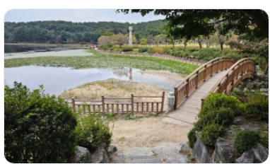
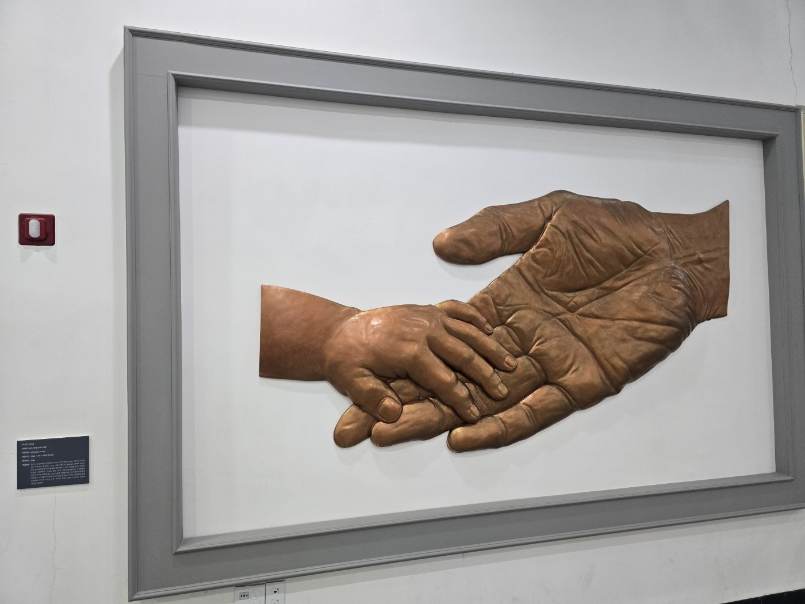
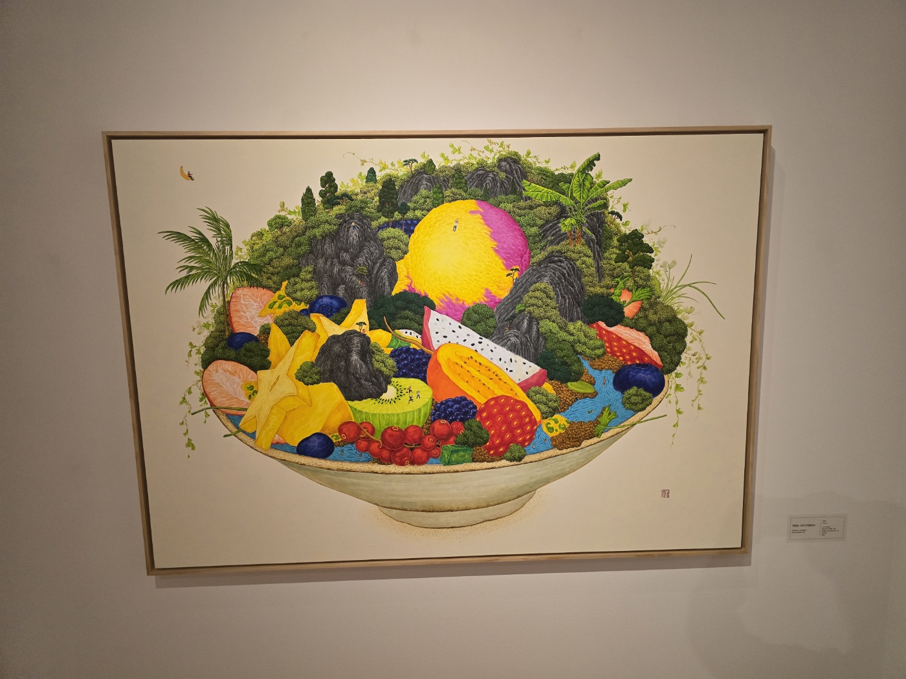
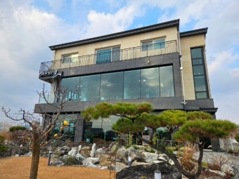
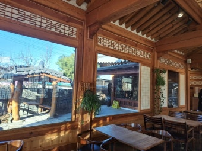
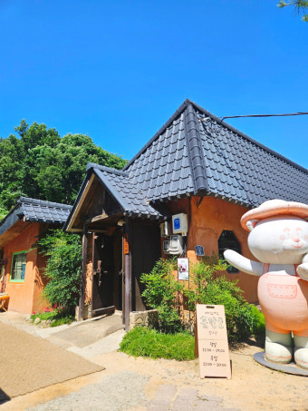

교과서 밖 역사탐방
초등고학년
이천 반나절 코스 & 힐링 가이드
고려 외교 영웅 서희와 예술이 숨쉬는
완벽한 주말 가족 로드맵
keyboard_arrow_down keyboard_arrow_down keyboard_arrow_down오늘의 코스 ✨
오후 정체 시작 전 여유로운 귀경 골든타임
초등 고학년 탐험 여권
현장에서 자녀와 함께 미션을 완료하고 도장을 찍어보세요! 3개를 모두 모으면 이천 역사문화 탐방 명예장이 수여됩니다.
마음에 드는 야외 조각을 1분간 감상하고, 작품명 팻말을 보기 전에 우리 가족만의 독창적인 제목을 지어 대화해보세요.
"이 조각은 어떤 감정이나 이야기를 전하 고 싶었을까? 작가는 왜 쇠와 돌을 이런 각도로 깎았을까?"
전시 유물 한 점을 골라 쓰임새를 추리하고, 이천에서 도자 문화가 발달한 까닭을 가족에게 1분 도슨트처럼 설명합니다.
"이 유물은 누가, 언제, 무엇을 위해 사용했을까? 이천의 흙·땔감·물길과는 어떤 관련이 있을까?"
거란의 진짜 의도(송과의 교류 차단)를 파악하고, 강동 6주를 획득한 명분을 가족 앞에서 30초 롤플레잉 연기로 펼쳐보세요.
"만약 서희 장군이 무조건 싸우자고만 했다면 어떻게 되었을까? 상대가 진짜 원하는 걸 알아채는 힘이란?"
우리 가족 이천 역사문화 탐방 명예장 수여
이천의 역사와 문화유산을 배우며 세 가지 탐험 미션을 훌륭히 완수했습니다.
타임라인 상세 가이드
서울 강서구청 출발 ➔ 이천 설봉공원
올림픽대로에서 제1외곽순환고속도로를 경유하여 중부고속도로를 이용합니다. 아침 공복 시 덕평자연휴게소 또는 공원 입구 편의점을 가볍게 활용하세요.
설봉공원 & 조각공원
세계 유명 작가들의 초대형 현대 조각품 90여 점이 푸른 숲 잔디밭에 펼쳐져 있습니다. 호수 산책로와 함께 예술 감수성을 깨우는 코스입니다.

진입로 안쪽 화장실 가까운 자리 추천
차량 이동 없이 숲길 산책로로 연결
이천시립박물관 (고대 선사~도자역사)
조각공원에서 도보 5분. 이천의 지리적 기원과 왜 명품 쌀과 도자기가 발달했는지 실물 유물로 확인합니다.

"도자기가 왜 하필 이천에서 가장 융성했을까?" 흙(고령토)과 땔감(소나무), 그리고 한양으로 물자를 나르던 물길의 비밀을 2층 기획전시실 인터랙티브 터치스크린에서 확인해보세요.
영상실 10분 + 상설전 25분
유모차 및 휠체어
대여 가능
이천시립월전미술관
한국화의 거장 월전 장우성 화백의 대표작과 한옥 전통 조형미가 어우러진 고즈넉한 갤러리.

이천 시민 50%
할인
포토존 정원 보유
얼쓰갤러리카페 & 이천 맛집 옵션
통유리창 너머 논뷰와 잔디 마당을 감상하며 샌드위치 브런치 또는 피자를 편안하게 즐길 수 있는 복합문화 카페.
서희테마파크 80분 완전 몰입 탐방
싸우지 않고 피 한 방울 흘리지 않은 채 거란의 80만 대군을 돌려보내고 '강동 6주'를 확보한 서희 선생의 외교 지혜를 입체적으로 체험합니다.
이천 출발➔서울 귀가
13:40에 현장을 출발하면 중부고속도로와 올림픽대로 상행선 병목 현상을 거의 피할 수 있습니다.
가성비 로컬 맛집 & 힐링 카페
조각공원 산책 후 들르기 좋은 따뜻한 원목 인테리어와 정원

한국 전통 서까래 처마 아래에서 즐기는 쑥라떼와 인절미 와플

이천 쌀 100%로 구워낸 쌀크림빵, 서울 귀갓길 가족 차내 간식 최고

이런 분께 추천해요
- • 초등 4~6학년 한국사 교과 연계 나들이
- • 3인 5천원 미만 알뜰 고품격 문화 코스
- • 주말 오후 교통체증 피하고 싶은 가족
- • 13:40 이후 귀경 시 정체 1시간 이상 급증
- • 유명 쌀밥집은 11시 전 테이블링 필수
- • 야외 산책로 대비모자 및 운동화 착용
우천·폭염 시 100% 실내 대체안
날씨가 궂을 경우 설봉공원 야외 조각 산책 대신 이천세라피아 도자미술관 실내 전시관 및 예스파크(도자예술마을) 공방 체험으로 즉시 전환하세요.
초등 탐험 준비물 체크리스트
오늘 완주 시 가족 선택 보상
미션을 모두 달성한 자녀에게 오늘 나들이의 주인공 권한을 선물하세요! 카드를 터치해 약속을 선택하세요.
같이 갈 가족에게 공유하세요
착한 가격, 짧은 이동, 풍부한 역사 학습까지.
이번 주말 당일치기로 함께 떠나보세요.